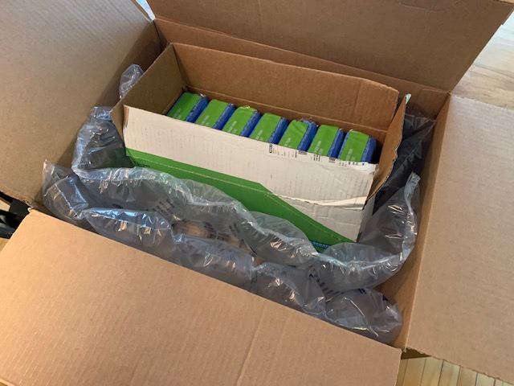

2023-03-29 09:25
Commitment
I'm convinced that nobody can spell the word commitment correctly the first time they write it.
This is the microblog of Soren Bjornstad. When I publish something interesting on the web, want to share someone else's interesting thing, or just have a thought that doesn't feel like it should stay confined to my head, it makes its way here. You might also be interested in Random Thoughts, which has similar content but a different audience (the audience is me, and I publish it in case it's useful to someone), my Zettelkasten, and my formal blog, Control-Alt-Backspace.
Housekeeping:
I'm convinced that nobody can spell the word commitment correctly the first time they write it.
Zettelkasten musings on a rare and specific kind of personal relationship and conversation in which everything you say is meaningful, relevant, enjoyable, and, in the words of my source, “helps you become.” What characterizes these relationships and how do you find them?
You focus all your rehearsal time on the hard piece, and the easy one comes off worse. The hare thinks the race is so easy that she stops and takes a nap. You let a petty administrative task sit on your to-do list for months. This pattern shows up everywhere.
I think we tend to assume that a task being easy means it is neither urgent nor important. Of course, this might be true, but in reality the difficulty of the task says nothing about its urgency or importance. We may need to pay special attention to easy items to ensure they are handled appropriately.
Commodification of attention is a system of organizational, psychological, and financial innovations that enables one to make money and/or curry favor by simply convincing people to spend time looking at things, usually virtual ones. In this post, I explore a variety of modern problems, especially social ones, I think COA is partially responsible for, including the degradation of quality in web searches, many of the negative effects of social media, smartphone addiction, and a decline in spontaneity and general freedom of socialization, as well as how COVID plays into all of this.
This afternoon I was trying to watch TV with a friend, and whenever she tried to select something on Netflix to watch, the Roku app crashed and we had to start over again. After several repetitions, she handed the remote to me, suggesting that the TV “didn't like her” and maybe I would have better luck. I didn't, but I realized later that at the time, I think I actually legitimately thought this sounded like a reasonable troubleshooting step!
As dumb as that sounds, we ended up “solving” the problem by going to Target (which we wanted to do anyway) and coming back, then trying again. This time it worked on the first try. It seems to me that this approach has an only marginally larger space of reasonable causal explanations, and yet this one worked.
I'm not sure what the lesson here is, except that software is terrible and I have no idea how anything ever works at all.
Last Saturday, I was busy at home all day, and when I stepped out to take out my trash and go for a walk at around 4:00 in the afternoon, I noticed that my car wasn't in its spot. That's pretty strange, I thought, where would I have left it? It wasn't until I thought for a few more moments that I realized it couldn't possibly have been me being an idiot and forgetting where I parked, as it normally is; I'd gotten home after midnight and gone right into my apartment and not left it since, and there was no conceivable reason I would have parked anywhere than in my assigned spot. I hadn't been drinking or anything, and I knew I'd driven home.
My upstairs neighbor still had a key from when I was in San Francisco earlier this year (so she could move my car out of the way of the plows as needed), so I texted her to ask if she'd moved it for some reason, but she definitely hadn't. And there was no reason I would have been towed, and no tracks in the fresh snow from a tow truck. Which seemingly left only the possibility it had been stolen. This was all but confirmed when I noticed that two of my car's floor mats had been left on the ground; obviously a tow driver wouldn't have broken into my car and thrown out the floor mats before taking it!
After a frustrating 20 minutes of trying to find a non-emergency number that was open over the weekend, I went ahead and called 911 and reported it stolen. They took the details over the phone and someone from the police department came out basically promptly (they were a few minutes later than expected, but who isn't?) and was very nice and helpful.
Not only that, but they actually found my car Monday morning and brought it into the impound lot. Granted, they didn't have a very hard time; whoever stole it had abandoned it in the middle of the lane during rush hour at 50th and Xerxes (a major intersection in SW Minneapolis).
On Thursday I spent a couple of hours cleaning out all the junk they left in the car, which included, along with a bunch of trash and random items, somewhere around eight used needles (they helpfully provided a portable sharps container in the back seat, although it would have been rather more helpful had they actually put the sharps in the sharps container; I guess that would have made too much sense). There were also a bunch of spilled blueberries on the floor, which doesn't exactly strike me as common junkie food! The car is still at the body shop getting an inspection, a new bumper, and a thorough cleaning, but it got away without much damage for a stolen car and I'll hopefully have it back in a few days.
Surprisingly, they didn't actually steal anything that was inside the car except for my dashcam (unsurprisingly; you'd have to be pretty dumb to leave a live dashcam in a stolen car), the spare key I'd left inside the car by mistake (obviously how they stole it; I must have inadvertently left the door unlocked as well, on the day that this person decided to wander to the back of my apartment building and try the doors on the parked cars, setting up a perfect storm), and, bizarrely, my car's proof of registration and insurance. They didn't even take the cash I'd left inside.
Anyway, my faith that the Minneapolis Police Department isn't completely useless was slightly restored! Of course, it probably helps that I'm white…
In #47, in discussing Lowry Hill Park, I mentioned in passing that Minneapolis used to have an extensive streetcar system that was paved over in the mid-20th century.
This winter has turned our roads into a mess of potholes, probably due to an unusual number of freeze-thaw cycles (to give you an idea of how bad it is, a friend told me they saw a driver in front of them run over a pothole on the I-94 onramp at Hennepin Avenue that gave such a big jolt that the airbags deployed). In a discussion about the roads on the Minneapolis subreddit, someone noted that damage at the intersection of Lake Street and Hennepin Avenue had actually exposed the old tracks and brick roadbed that had been paved over, so I took a little detour over there when I walked down to the bank today, and sure enough:

Closeup taken from the other side while crossing (the brick is remarkably well-preserved; I guess being sealed in by asphalt will do that):

A bluesy song I'm learning includes the following progression in the key of D major:
D – F#7 – G – D – A – D
(Actually, I added the seventh because it sounded better with the mandolin's sometimes-awkward voicing; it was a bare F# major in my source.)
I wasn't, and am still not, sure how to describe the function of the F# dominant seventh. When you play it, you can hear that it plainly leads into the G, which makes some sense to me given that it's built on the seventh scale degree of G and thus acts sort of like a V7/V (D7) would, but I can't quite put a name on it. (I initially suspected tritone substitution, but the relationship is off by a whole step.) In a major key, it doesn't make sense to talk about the seventh scale degree being major, so it must be getting borrowed from some other scale or have some funky name or principle all its own. Please enlighten me if you know!
Anyhow, as part of my search, I decided to see how ChatGPT would do at chord analysis. Here's what I got:

This actually wasn't a horribly bad first attempt; my initial prediction before looking at the notes was also that the chord was a V/V or something similar. But when I pointed out that this couldn't be correct because the V in D major is A, and F# is separated from A by a major sixth, it produced this delightfully confident nonsense:

10/10 on matching the form of a harmonic analysis, 0/10 on forming a logical argument.
For my whole life, I have strongly disliked iced tea. This wouldn't be particularly weird, except that I love hot tea and drink probably 4–6 cups on a typical day. Iced tea, even high-quality brewed iced tea, tastes gross and bitter and sometimes even makes me gag.
I think there might be something funny going on here where most people's perception of tea strength scales differently based on temperature than mine. Ordinarily people brew iced tea around twice as strong as hot tea because tastes are perceived more weakly when food is cold. Maybe I should try some iced-tea brewing experiments at different intermediate strengths and see if it ever starts tasting good?
Possibly related: I dislike hot drinks that contain alcohol even though I like most cold or room-temperature alcoholic beverages, including strong spirits – the alcohol taste feels quite overpowering in hot drinks. I'm not sure how this fits into that picture, though, since the iced tea/hot tea divide would suggest that I notice temperature-based strength differences less than the average person, while this would seemingly suggest more.
Ever wonder why hand dryers take such a long time to warm up? Turns out…they don't, as xkcd pointed out this week. Hand dryers work by encouraging the water to evaporate from your hands. When water evaporates off something, it cools rapidly – think about what happens when you climb out of a bath or pool. (This is also how both sweating and swamp coolers dissipate heat.) In the case of hand dryers, this cooling effect is strong enough to make the jet feel cold even though it's actually quite hot – until your hands are nearly dry, just in time to make you grumble about how it only managed to get nice and hot when you were already done drying your hands.
I still didn't quite believe this, but you can try this one at home! Grab a hair dryer, set it down sideways on a flat surface with something behind it to prevent it from jet-propelling itself across the table (or, better yet, enlist a fellow householder to hold it, then switch places and enlighten them with this demo), and get just one of your hands wet. Then switch it on at the highest and hottest setting. Sure enough, mine reaches full power – hot enough to be painful on a closely placed dry hand – within 5 seconds after a cold start, yet still feels cold on the wet hand.
Come to think of it, I've been low-grade puzzled for years about why my hair dryer only sometimes seems to take forever to heat up. Once you know all this, of course, the answer is as blatantly obvious as it was mysterious before: sometimes my hair is wetter when I start drying it, which makes it feel colder for longer.
I'm sure some of y'all think this is obvious and are laughing at the rest of us now, to which I can only say, this xkcd appears to be autobiographical, and if Randall Monroe, a former NASA engineer and author of bestselling silly physics books, only recently figured this out, it can't be that obvious, can it?
Metaphor is an experimental new kind of search engine based on an LLM. Rather than typing in keywords describing what you're looking for, you pretend you already have the link you want and are sending it to a friend, and write a brief introduction explaining what it is. Then it supplies a list of predictions for what link you might be talking about.
This works surprisingly well. I find it especially useful if I am thinking of an article I know exists somewhere on the web, but can't remember what it was called; it's challenging to find effective keywords for a traditional search engine in this case, but usually easy to describe the article in enough detail that Metaphor can find it.
Metaphor is currently free and open to the public. Give it a try: https://metaphor.systems.
Not to be confused with The fundamentality of metaphor.
The other day I was on a first date and we were talking about our experiences of the early COVID-19 pandemic, and I mentioned that I had used much of my excessive free time to write a textbook called Grok TiddlyWiki. Naturally, she asked what TiddlyWiki was, and I realized, somewhat to my alarm, that I had no effective way to explain it. If anyone in the entire world should be able to give a good elevator pitch for TiddlyWiki, surely it ought to be me, seeing as I recently spent a year and a half writing a book to teach people how to use it! My first reach was “Notion, but more customizable,” but she hadn't heard of Notion, so that didn't help at all, and this seems like a cop-out anyway; it just moves the question to, what the heck is Notion, actually?
Once you get over the immediate absurdity of the fact that I just wrote a book about this tool and I still can't concisely explain what it is, that this is challenging isn't actually all that surprising: a general problem with researching, developing, and promoting tools for thought like TiddlyWiki is that they don't wow. That is, because the really revolutionary ones allow you to think in new ways, the problem of understanding why the tool is useful and the problem of learning the tool are necessarily intertwined; without the habits of thought developed by learning and using the tool, the tool in some way can't make sense. (Paul Graham popularized this line of thought back in 2001 when he wrote about Blub programmers.)
This said, surely I can at least do better than “Notion, but more customizable.” A good start is the front page of Grok itself:
TiddlyWiki is a human-shaped tool for organizing information and taking notes. It stores and relates information in a non-linear but structured way, just like your brain, and it doesn't forget things.
It's helpful to add some use cases, like I do a bit lower down:
People use TiddlyWiki for keeping notes at their jobs, collecting their ideas, keeping track of what they read, drafting books, building static websites, storing recipes, managing genealogical databases, planning tabletop role-playing campaigns, and much more.
The big problem here is that, reading this description, you still don't know anything about how one uses TiddlyWiki to do this. This is not really a problem for Grok TiddlyWiki, since the entire rest of the book is about this, but it's a big problem if you're trying to educate and/or hook people who aren't already interested. It's like we've explained what a car is but not talked about how one uses the steering wheel and pedals to make it move around. If you've never heard of a car or seen someone drive one, it's going to be tough to imagine someone using one without those details, and I find it's difficult to understand the value or purpose of software if you can't imagine the experience of using it.
Here's my best shot at a version that incorporates most of the ideas above. It starts by comparing to a tool almost everyone will know, but doesn't rely on that comparison; it incorporates the “human-shaped” idea and the example use cases, and it tries to give a picture of the actions one takes when working with a TiddlyWiki. Its biggest weakness is that it tends on the formal and dense side. I feel like I should be spending many more days on this problem; it's hard to imagine how the field of tools for thought in general is going to succeed unless we find a way to explain why it's important!
TiddlyWiki is a tool that helps you think in new ways by extending the fundamental ideas of the spreadsheet so that they work effectively with long-form prose. Information in TiddlyWiki has a flexible structure, so you can match the shape of your content within the wiki to the way you think about it. Things can be organized strictly, in tables like a spreadsheet or in hierarchies like an outline, or loosely, in webs of related components with nebulous relationships, and you can show the same data in different formats at different times. You split your facts and ideas into little pieces called tiddlers (much like rows of a spreadsheet) and the tiddlers into fields (much like columns), then add links and tags to describe the relationships between tiddlers. Then you can use custom formulas and formatting options to search, filter, sort, answer questions about the relationships between things, and change the appearance of your wiki to look like almost anything at all.
The amount of flexibility TiddlyWiki affords makes it challenging to learn or even explain – you have to develop a few new ways of thinking to make effective use of the tool – so that's what my book is designed to help with. I use my primary TiddlyWiki as a sort of topically organized journal, keeping track of things I've learned about myself, my life, and the world in a form where I can easily build on previous insights.
What a difference a space makes (Muir Woods):

I love this diagram of a ferry speeding away while the person holds out their
watch with a balled fist. It looks like they're trying to dive onto the distant
ferry or something (Angel Island):

As we all know, once you turn 18, you immediately become totally responsible and would never do anything illegal with spray paint or Sharpies (Muni M line):
And when children gather, it's “congregating”. When adults gather, it's “loitering” and illegal (Nob Hill):
Non-binary people, just come right in (Mendocino Botanical Gardens):

Wouldn't want to offend the trash (Nob Hill):
Above the toilet at a group house in Berkeley. Dreadful spelling and grammar
aside, I'm so confused by “whenever possib”. Did the person who wrote this
forget to finish the word, or figure everyone would get it even though it
didn't fit? When would it not be possible to avoid flushing kitchen paper
towels down the toilet? When would it be considered possible in
America to avoid flushing toilet paper down the toilet?

I tried to go for a walk on the beach today. I did not think to check the wind speed, which turned out to be 30mph gusting to 55mph. The Pacific was looking pretty majestic, but I basically got low-pressure sandblasted as I walked along. I also planned to take a shortcut through what looked on Google Maps like a public park but turned out to be a heavily fenced private golf course, and ended up having to walk along the median of a four-lane highway and then vault over a jersey barrier to get to the beach (there wasn't too much traffic and it felt pretty safe, but it wasn't exactly pleasant!).
You know it's windy when your windsockponytail sits at the side of your
head pointing forward:

(This is my “trying not to lose my balance in the wind or have dust blown in my eyes” face.)
Not a bad day though. Travel is always more fun when unexpected things happen...like the time I got stranded at a stranger's house in Austin, MN for two days without my glasses or phone.
This is a brilliant option on the latest iOS:

I didn't realize I needed this until I found the option and tried it out of curiosity. Frequently, what you want to know when you check the time and date is really how long you have until the next thing you need to do. This option inconspicuously shows the name and time of the next item on your calendar (or the current item, if it's in progress, as you can see here) next to the date.
You can configure this by long-pressing in the middle of the lock screen, tapping “Customize”, then the lock screen thumbnail, then the date, and selecting the “Next Event” widget.
Now in San Francisco for the month, this weekend I rented a car and did a road trip north on Highway 1 to Fort Bragg, a beautiful drive. I brought with me and listened to (multiple times) all the albums of Gillian Welch, who I recently rediscovered. As funny as it sounds to say this since this was only five years ago, I think I wasn't old enough to appreciate it when I heard it for the first time, just after graduating college.
(Although most of the music they make together is under the name “Gillian Welch”, Welch's partner David Rawlings is as essential a part of it as she is; they write the songs together and he plays lead guitar and sings harmony on everything.)
What I love about Welch and Rawlings – and the reason I think I wasn't old enough to get it before – is that they tell the story of life just like it is. They neither sugarcoat things nor tell unmitigated tragedies; their songs are almost universally about suffering and loss and struggle, often severe, and yet somewhere there's always a tinge of solace and redemption, often so subtle and implied that you can't figure out where it comes from, but you feel it, a testament to the fact that despite all this, people manage to make life not just tolerable but very worth living. There are certainly no promises, but there is hope.
In recent years their arrangements have been sparse, usually just their voices and two guitars, occasionally a little mandolin or banjo or percussion; it sounds like two people sitting on their porch picking, except they're insanely good. Musicians will know these simple arrangements are not the easiest but the hardest to get right, because there's nowhere to hide the mistakes. But the two of them are so perfectly in sync that there aren't any mistakes to hide. Their voices even blend so well that sometimes I don't immediately notice Rawlings has come in, even though he's singing different notes!
I think their finest work so far is The Harrow and the Harvest, published in 2011. The epitome of everything I've said above is the track “Hard Times”, which borrows the title from Stephen Foster but takes the sentiment in a totally different direction. Instead of being comfortable and sparing a thought for those worse off than them, the characters are in the thick of it, dealing with the hard times, and they don't presume to ask for hard times to “come again no more,” but simply promise themselves that the hard times “won't rule their minds no more.” Yet the ploughman, very relatably, fails to take his own advice, falling victim to modernization and ceasing his refrain, even as the audience is exhorted to celebrate in the midst of it one more time.
In #11, I was searching for terminology related to:
...a pattern I've started noticing, in which someone wants to achieve a particular goal A, or likes a particular process or activity in total, but is incapable of, scared of, or strongly dislikes a necessary component or step of that goal/process/activity A′, creating an infuriating tension and an obstacle to progress.
While I still don't have a clean word I like for it (but thanks to those who have sent suggestions and interesting notes!), I noticed that David Cain has the following enlightening diagram describing more or less this phenomenon in his “How Mindfulness Creates Freedom”:
The greener an area, the more desirable it is. Sometimes, to get to the green A territory, you have to pass through some less-green A' territory.
Situation (based on a true story): Three friends, Alice, Bob, and Charlie, are planning on meeting up, but there is heavy snow. Alice writes to say she can't make it because her street hasn't been plowed yet and her car doesn't have enough clearance to drive through the snow. Bob and Charlie thus learn the roads are probably going to be a real pain to venture out on, and Alice can't make it, so they start to consider canceling, but aren't sure. Bob thinks he would enjoy going if Charlie still actively wants to meet up, but doesn't want to bother if they both feel this way.
Is there a concise way to describe Bob's attitude?
Near misses:
Extraordinary times call for extraordinary effort. Most times are ordinary. Make an ordinary effort.
Zvi Mowshowitz, “Slack” [rt] [source]People say they're not doing the work because it's hard. But it's hard because they're not doing the work.
Derek Sivers, How to Live [rt]The average city dweller spends around four months of their life waiting at red lights.
If this sounds impossible, here's the math: suppose you average about five minutes a day waiting at various red lights. (That's probably eight average lights' worth of waiting? I definitely wait at more some days, but then there are days I don't go much of anywhere since I work from home, so this seems about right. I'd expect it to be more for people who have significant commutes. If you take the subway or grade-separated light rail most of the time, you get to skip most of the red lights, but then you wait for your train to arrive instead.) That makes 1,825 minutes per year. Then we'll say you spend 60 years of your life in the city and traveling around regularly (this is probably an underestimate), for 109,500 total minutes spent at red lights. Divide by 60 again for hours, and by 16 for waking hours per day, and you get 114 waking days spent waiting, or just under four months.
Five minutes a day doesn't seem like much of a commitment. But actually it's a huge one. You can get a lot done in five minutes a day if you're consistent. You can also waste an enormous amount of time in five minutes a day if you're not doing something worthwhile with it. (Exercise for the reader: can you do something interesting while waiting at red lights?)
Even in a rather feminist-ideology-saturated 2022, it's quite rare for straight women to ask out straight men. People of all genders seem to agree this is silly, then shrug and keep doing exactly the same thing.
It struck me recently that there is at least one reason that expecting one clearly defined person in any potential pairing to be in charge of expressing interest could be functionally useful. Consider that it's quite common for two people to actually be quite interested in becoming friends, but for nobody to ever make a move because they're kind of shy and figure the other person, presumably with better social skills, would do so if they were interested. But when one person has reason to expect that the other will not make the first move even if they're interested, there's much stronger motivation for them to act. My suspicion is that significantly more low-level-interest situations turn into dates under the current expectations than would without them.
I'm not sure if that's worth it (especially because sometimes people don't realize they're interested until another person expresses interest), but it's certainly interesting. This is part of a constellation of struggles playing out in today's world, between having social rules that are unnecessarily limiting and/or don't work for some people, and having so few rules that people don't know what to do. I expect to write more about this later.
See also §NoRulesNoFreedom.
I had to reboot my printer the other day, and it decided not to come back on after I turned it off. Pressing the power button did nothing, unplugging it and plugging it back in did nothing, and so on.
After trying unsuccessfully to start it several times over a few days, I was on the point of deciding it had crapped out on me and buying a new printer, but was stubborn enough to try wading through some terrible troubleshooting advice on the internet first. After several useless attempts, I found someone who recommended unplugging the printer, removing the paper tray, and plugging it back in. Astoundingly, this somehow worked – the printer came on normally again and works as well as always (which is “not that well,” since it's a consumer-grade printer, but I'll take what I can get).
This reminds me of the time my monitor stopped working and I took it apart to see if anything was obviously wrong. I couldn't find anything, so I put it back together and on a whim plugged it in again. It worked again, and continued working for another 5 years. There was one extra screw that I couldn't find a place for, so I dubbed that the “screw of malfunctioning” and threw it away.
I seem to have accidentally created a tradition of recording a song or two for the internet at the end of every year. Two love songs on the mandolin this year: “Pretty Saro” and “Tell Me True.”
I'll be in/around San Francisco from January 22 to February 20 (working days, exploring evenings and weekends). I have never been to the West Coast before. If you're nearby and want to meet up, or you have something to recommend to me, shoot me an email or reply below! I have very few plans at the moment.
I occasionally offer awards to internet strangers who send me recommendations I love. If I am so moved, your choice of:
Among the most confusing intersections I've ever seen:
These train tracks in Southwest Minneapolis (Linden Hills, next to Lake Harriet) are used only for a low-speed tourist attraction, so there are no crossing arms, and they put a YIELD sign in front of them. So far so good. But then there's an intersection immediately after it, with not even enough space to stop your car past the tracks…and cross traffic has a STOP sign. But only on the right, not on the left, because that street is one-way. Plus there's the post on the corner with 4 extra signs that draw away your attention and can block your view of the STOP sign if you look over there while you're in your car.
Of course, this isn't technically wrong – the YIELD sign is only meant to apply to the train tracks, and then there is no sign controlling the actual intersection, so you can go through and cross traffic has to stop for you. But it's confusing as heck and they definitely should have picked a different approach.
What happened to me, coming up to the intersection from the direction the camera is looking: I yielded to (nonexistent) rail traffic, then started across the tracks and was about to go through the intersection when I saw someone coming from the right and went “Whoa, I had a YIELD sign!” and slammed on the brakes, only to see they had a STOP sign. I had to walk back and look at the intersection again after I parked to figure out what happened.
This 30-minute video provides a fantastic and accessible overview of the limitations of provability and decidability, including self-referential paradoxes, Gödel's Incompleteness Theorem, and the halting problem. Highly recommended, even if you're familiar with some or all of these ideas.
Today I helped supervise a bunch of high-schoolers at an overnight youth event at my church, which I have not done before. This was equal parts chaos and fun and consisted mostly of (1) staying up until 2 AM and (2) telling the kids not to touch things that weren't theirs, break things, or disappear on us.
I felt about 15 years younger (in a good way) when I found myself and the youth director (the only adults there) lying on the floor in sleeping bags in the dark at 1:30 AM talking. The only difference was that we were talking about getting older instead of high-school gossip!
Today I went to the state park and historic site at Fort Snelling, located next to the airport just southeast of Minneapolis, at the confluence of the Mississippi and Minnesota Rivers.
First I hiked a couple of miles. The trails were nice, many running next to one of the rivers, and I'll definitely come back here; the only major drawback is that it's pretty noisy, as it's right next to both the airport and several major highways. Indeed, the historic area was almost demolished for Highway 5 – after public outcry, they ended up routing the highway through a tunnel underneath it instead. (A substantial part of Fort Snelling was demolished for the airport as well, but it was an area with very little historic value, made up mostly of barracks for temporary residents who were going through training or processing, some of them made of little more than tar paper on frames.)
Because it's midwinter, a lot of the historic site was closed, including the main fort building, but the side museum was open, with a number of volunteers doing little presentations. Normally I find people talking to me in museums really annoying, because the exhibits are designed to be self-paced and then you're forced to context-switch all the time between a carefully designed exhibit and some random person who's telling you stuff. But these folks were good and the exhibits were actually pretty boring without them, so I ended up appreciating it (special shout-out to the woman who had just started yesterday but was already able to talk in great detail for 20 minutes to me and two other people about the complete chronology and function of the buildings on an unlabeled birds-eye diorama of the fort).
I'll have to stop back up next summer to see the rest; they just redid the whole place a couple of years ago and all of it is supposed to be really good.
The other night I dreamed that I was at a public restroom which required me to create an account in order to use the toilet. This seems like the epitome of technological bureaucracy in 2022, and is entirely believable!
I missed yesterday because I was busy working and writing a bunch of stuff in my Zettelkasten, but today I got back on the bandwagon with a visit to a little tiny tea store which I've passed by a few times and never gone into. You just stand in front of the counter and tell the lady what you're interested in, and she finds something to recommend and sells it to you.
I haven't actually tried the tea yet (I would do it now, but I don't need more caffeine at 10:30 pm), so I'll come back and update this when I have a report on whether it's any good! (I'm guessing loose tea from a store that sells only tea and that's about $0.50 per cup is going to be pretty good, but you never know.)
While I was writing examples for the on-line help of a new feature of Dreamdir, Copilot (quite
remarkably) recognized what I was trying to do with the rather hackish awk
pattern patsplit($4, arr, /,/) == 1 { print $0 } (split a string
on commas, and use this operation's return value, informing us how many splits
were made and thus how many commas were in the line, to decide whether to show
the line or not – completely ignoring the actual split values). It even drily
noted that “this is a contrived example,” which it certainly is!

Only, it's not quite right! The return value of patsplit
here is 1 not if there is exactly one person in the column, but if there are
exactly two people in the column, because there would be no comma at all, and
hence zero splits, if there was only a single comma-separated value. It's
interesting that it made exactly the sort of mistake that a human programmer
would make here – I didn't even notice the error until I actually ran the
command and looked at the output to be sure I hadn't made any syntax errors.
Indeed, there's no particular reason awk would have to return 0 if
there are no splits; it could easily have chosen to define the return value as
the number of elements in the resulting array, in which case Copilot's
explanation would be right; it just doesn't. (0 does have the benefit that the
return value becomes falsy if the delimiter wasn't found, though, which could
be convenient on occasion.)
{ print $0 } isn't actually necessary: if an
awk program consists of only one pattern with no body, the body is assumed
to be { print $0 }. I left it in here in case people reading
the examples don't know this!)
Today I went for a walk in the Lowry Hill neighborhood, as prompted by a nifty iPhone app called Randonautica which I use occasionally. This lets you select a radius around your current location, then randomly picks a spot you're supposed to go explore somewhere within it (using some amusingly woo-woo method). Inevitably, you find something interesting in the area it instructs you to visit, not of course because its “method” actually knows where interesting things are, but because interesting things are all around us, and we usually aren't paying attention.
There was a surprisingly nice view of the skyline right at the spot it pointed me to, although my phone camera didn't do the best job of capturing it:

On the way back, I went through Thomas Lowry Park, named after the streetcar magnate who made huge contributions to Minneapolis's transportation system (the streetcar tracks have been long since paved over, to the eternal regret of Minneapolis urbanists). I had not been there before, and had read the other day that it has a fountain made up of a series of cascading pools. Presumably these are them, though it was a wee bit cold for any fountain action today:

And a little further on, in the middle of some really cool historic apartment blocks, was this nifty carved lamppost in front of a random house:

Today there's a winter storm warning, so I'm not going anywhere. Instead I made a really intense mushroom barley soup from an amazing soup cookbook called Dairy Hollow House Soup and Bread, written by a woman named (I kid you not) Crescent Dragonwagon. It's undoubtedly the richest vegan soup I've ever had – mixed dried forest mushrooms, button mushrooms, white wine, the typical soup vegetables (including parsnip for that little bit of bitter zest!) and a homemade roasted vegetable stock with extra mushroom stems.
Every recipe from the book I've tried is good, but many of them are quite a production – being recipes they make at Dragonwagon's inn's restaurant, it's rare to find one with fewer than fifteen ingredients, and there are usually lots of steps. This one had 19, and one of them was the stock, which itself had 10. But if you don't think vegetable broth is good, this one will change your mind! I would have happily sipped a cup of it if I hadn't needed all of it for the soup. Totally worth it.
I'm a mushroom lover, so this recipe couldn't really be bad. It came out a little sweeter than I would have preferred though – next time I'm going to try a very dry wine instead of the medium-dry the recipe called for. (It could be partly the fault of the vegetable stock I chose, which is a touch sweet because the veggies are caramelized.) Met expectations overall, though it only scores that low because I have high expectations of the cookbook.
When I started working from home (permanently, post-pandemic-restrictions), I had originally planned to go work somewhere else for part of the day most days. As of yesterday, I had somehow managed to do that exactly zero days on which I was otherwise based in my home office. While I'm introverted enough that I don't get lonely from being at home all day as long as I go hang out with other people a couple of times a week, it's definitely still better for me to get out of my apartment most days, so I'm planning to try out a bunch of nearby spots I could work and hopefully find a couple that I can become a regular at.
One problem with working away from home is that there are some tasks I can do way more effectively at my desk, with two 24-inch monitors, access to four different computers running different operating systems, and a whole office setup. I know what tasks I can do well with just my laptop, but I've often done a bad job of block-scheduling them. So in some sense, this will be a task-management experiment as much as a place experiment. (I do have a handy portable 15-inch monitor that folds up to the size of a laptop and can be used as a second screen, but I think it's a bit too nerdy to set up at a table in a coffee shop! You also kind of have to set up an external keyboard and mouse too if you want to run dual monitors without wrecking your ergonomics, which makes it even more impractical.)
In the interest of not allowing a bunch of internet strangers to trivially triangulate my exact home address, I won't say too much about exactly what these places are or where they are in relation to me, but I'll drop in a little. The coffee shop I tried today (I had been once, but not to work, and before I actually lived in Minneapolis) somehow felt simultaneously really nice and not quite the right vibe for me. I could imagine getting used to it, but I'm not sure about it at this point either.
(For Sunday, the actual publication date.)
When I joined Costco last December, the guy at the customer service desk read my address and told me I had to try Bogart's Doughnut Co., which isn't actually that close to my apartment but was apparently his main association with Uptown. It's right on the way from my apartment to church, but I've never stopped, so today I did on my way home and got their brown-butter-glazed doughnut, which I was told was the classic. It wasn't, in my opinion, astoundingly good, as I had been made to believe from the way he and another woman there talked about it, but it was solidly excellent and I'll definitely go back if I'm craving a doughnut.
In the afternoon I went to the Foshay Tower downtown and went up to the museum and observation deck. I only saw four other people, on a holiday weekend, so the observation deck must be unusually unpopular for one situated in a major city; it's certainly odd that the way to go up is to walk into the hotel and ask at the front desk to pay $9 for an elevator key card (they even make you sign on the screen, on a line that says “I agree to pay all room charges and incidentals”).
The story of the tower, and Foshay himself, is fascinating, but I was a little underwhelmed by the museum as a museum. It lacks any kind of clearly presented story, and has only a couple of small slips of paper written by the curator, so that you have to read all the newspaper articles and artifacts yourself and try to draw your own conclusions, something which is difficult to do reliably given that some of the articles are nearly a century old and you don't know what motivations the writers might have had. I'm still unclear, for example, on exactly to what extent Foshay's company was a Ponzi scheme; he clearly lied about where the dividends he was giving out were coming from, but it seems like he also had a real business that would have been profitable sooner or later?
The observation deck was fun, but you do have to temper your expectations a bit since you're on the thirty-second story smack in the middle of a downtown that has quite a few taller buildings. You get a great close-up view of the buildings around you that you couldn't easily get from any nearby public space, and there are some gaps where you can see quite a long way, including a decent look at the skyline of St. Paul, but if there's a specific area of the city you're hoping to glimpse, or you want a panoramic overview, you're likely to be disappointed. I couldn't see into my own neighborhood at all; the AT&T Tower prevents you from seeing anything to the east of Lake of the Isles and west of Nicollet or so. Also, the telescopes at the corners were a nice touch, but a couple of them were so dirty they were basically useless.
For an hour and $9, it was totally worth it, and I'd definitely recommend it to guests.
On Saturday, the weather was gorgeous and I rode the bus downtown and tried to visit Water Power Park and maybe read for a while. This is (apparently; as you will soon see I have not yet been there) a projection into the Mississippi River in downtown Minneapolis near the Upper St. Anthony Locks where you can relax and look out on the water. The park was, however, closed for unspecified maintenance activities, despite showing as open on Google Maps. Fortunately, I had had the idea of combining it with starting on the opposite side of the river and walking across the Stone Arch Bridge, which is a historic rail bridge connecting the former mills on the west side of the river to the mainline on the east side, so the trip wasn't wasted.
The whole area is beautiful and I can't believe I haven't been yet. I grabbed this picture of the skyline and the (being renovated) Central Avenue bridge from the point where I tried unsuccessfully to enter Water Power Park. The Stone Arch Bridge is not visible, but is off a few hundred yards to the left.
On the way back, I stopped at a used bookstore that's less than three blocks from my apartment but which I've never been in, partly because it's only open on Saturdays and Sundays, and bought a big stack of books. I'm not sure how fast the inventory rotates, so I'll have to check back in a couple of months to see how often it's worth going.
In my reflections on living in Minneapolis for a year (see post immediately below), I noted that I want to try doing more different things, and generally drawing more samples across all areas of my life. In the last year, I've done about as many things around me and gotten to know about as many places as I would have in any of the smaller towns I've lived, which makes it seem like I'm not taking full advantage of the opportunities I have here. The new things I've gotten have been mostly minor, like being able to attend concerts fifteen minutes' drive from my home instead of an hour; I'm not sure I've even gone to a whole lot more of them than I otherwise would have.
The world is a really interesting place with a lot of people, places, and activities in it, and living in a city means you get a bunch of those things packed together closely enough that you have more of them available than you'll ever be able to explore within thirty minutes' travel. I'm not saying that I need to aggressively try to do everything I possibly can, constantly for the rest of my life, but especially being only around a third of the way through my expected lifespan, it seems like I should be exploring more than I am.
In an attempt to adjust for this, I'm going to try to do something new every day until the end of the year. At that point, I'll evaluate and see if I want to continue this, maybe in some altered form. I'm not only going to count events or places in the city, though I expect many of the items to fit in there; I'll also count things like cooking a new recipe or meeting someone new online. I won't, however, count reading books, visiting websites, or anything that I would likely already have done without this project.
To keep myself honest, I'm going to write something here every day about what I did under the “New Stuff Experiment” tag.
As of today, I've been living in Minneapolis for one year and one day. I wrote up some thoughts on what's been different about living here.
The McCollough effect is the creepiest perceptual phenomenon I know of. By staring at gratings made up of horizontal and vertical lines interspersed with red and green bars, you start to see images of the same gratings separated by pure white as having pinkish and reddish tints.
So far, this seems like a pretty normal afterimage demonstration, except that the colors are the same instead of inverted. Here's the weird part: if you do this some day, and then you put it away and come back in several months, you still see the same illusion without doing the induction again! (I just did a several-months-out test. It worked as advertised.) Somehow the simple expedient of looking at some colored images for a couple of minutes can create lasting changes in your visual perception. (If you find this scary, know that retesting yourself repeatedly over a short period of time will eradicate the effect; whatever adaptation occurred will promptly undo itself once you can give your brain enough new input showing that it's really white.)
Phenomena like this seem to me to provide tantalizing clues of a world – and a human consciousness – that's vastly weirder and more interesting than we can imagine.
There is a theory which states that if ever anyone discovers exactly what the Universe is for and why it is here, it will instantly disappear and be replaced by something even more bizarre and inexplicable. There is another theory which states that this has already happened.
Douglas Adams, The Restaurant at the End of the UniverseJust you put good stuff into the universe and most of the time the universe will return good stuff to you. And even if it doesn't, you should still be enjoying it.
David Heinemeier Hansson, “You can either buy attention or earn it” [rt] [source]I've been using my own little desktop bookmark manager called RabbitMark for about 8 years now, and I finally got a chance to clean it up and publish it. If you save a lot of bookmarks and are looking for a good solution to keep them under control, check it out!
The Concorde featured a droop snoot, which meant the snoot would droop.
If anyone knows of a more annoying everyday occurrence than missing a bus because the bus left the stop before the scheduled time, I'd like to hear about it.
This is the best treatment I've ever found of this age-old and extremely complicated question. Rather than try to simplify, it lists out all of the considerations involved and shows how to crunch the numbers to see what actually makes sense for your situation.
When I was in sixth grade, I, like many people, was tricked into believing that metaphors were some kind of obscure figure found mostly in fancy poetry. Nowadays, I believe that metaphors are the most important – and simultaneously among the most unrecognized – cognitive tools available to humanity.
How do you learn things? By relating them to things you already know. When you learn an unfamiliar concept, you find a concept you're familiar with, pretend they're the same thing, and then add corrections for the things that you notice actually aren't the same. Similarly, even once you know things, you often reduce problems to easier ones or ideas to ones you're more comfortable with. This happens both linguistically (the most traditional use of the word metaphor) and conceptually.
Incidentally, I also believe this is a prime reason that fiction and friends (legend, anecdote, etc.) are effective tools for communicating truth, or, on the flip side, for creating untrue and/or maladaptive beliefs. Nonfiction is honest about its metaphors, which makes it easy for the reader to accept or reject them. Fiction just creates them and lets your brain make its own connections while you aren't looking. Fiction is also free to use much more creative metaphors, which are more powerful and harder to predict the effects of.
Much smarter people than me have explored these ideas in much more detail (perhaps most notably Julian Jaynes; the Conceptual metaphor article on Wikipedia provides an interesting overview of some modern ideas), so I won't blab on any longer, but I was struck today by how undertaught this fundamental feature of the world is and wanted to make sure my readers had thought about this at some point!
Gnomish scrollkeepers, in my roguelike, are mischievous little creatures generated with 1–3 magical scrolls that do irritating things. A balance problem created by this (not that the game is far enough along to have meaningful balance yet!) is that if one doesn't find a use for all of its scrolls before you kill it, you get to pick up the extras, and if a lot of scrollkeepers show up, you get more scrolls than you probably should. To counter this, I decided to make scrollkeepers have a chance of successfully lighting their scrolls on fire as they died, to avoid their species' magic getting out and all.
Copilot had a…different idea:

As I started adding images to this microblog, I realized I had a problem: since the entire thing is a single page, after a while the page was going to start downloading dozens or eventually maybe hundreds of images every time someone browsed to it, most of which the reader would never look at unless they decided to go through the archives for all of time – hardly the lightweight site I'm aspiring to create. I could have written some JavaScript to load them when the reader came to them, but this also seemed ugly and not in keeping with the philosophy of the site.
Happily, it turns out HTML5 added an image attribute,
loading="lazy", that causes exactly the right behavior here. The
precise way the browser decides when to load images is up to the browser, but
essentially it grabs the images for only the first couple of screens of
content, and then as you scroll down it starts pre-requesting images that are
1–2 screens away. So unless you start scrolling really fast or have a really
slow network connection, you'll never know the images aren't being loaded
up-front, they'll just be there when they scroll into view.
This is supported on all major browsers except Internet Explorer, and if you're still using Internet Exploder in 2022 for anything except an old and broken enterprise website, I'm gonna say you deserve to download a bunch of useless images.
…you can now pay for your tea in installments.

At choir rehearsal last night, we started Michael Praetorius's “Psallite”, which contained the temporarily puzzling Latin phrase:
Christo Dei filio…puerulo iacenti in praesepio!
Which the Latin-reading part of my brain decided to interpret as “baby Jesus, thrown into a manger.” (It would actually have to be throwing, present tense, and it would be more idiomatic to use the accusative for praesepium when motion is involved, but my brain glossed over this in its attempt to make sense of this silly reading.) I spent the next ten minutes with an image of someone chucking a baby across the room into a manger as if throwing a balled-up piece of paper into a wastebasket running through my head.
It was only when I got back to my dictionary that I finally realized I had made the classic mistake of confusing iacio, to throw, and iaceo, to lie (mnemonic: the lowercase letter i looks sort of like a person standing up). But in looking at the dictionary entry, I also realized I had arguably only been half wrong! The two words are closely related in both meaning and etymology; iaceo is an intransitive and stative counterpart of iacio. The sense is that when something is thrown or cast down, it ends up lying where it was cast. Which makes a neat metaphor: Jesus was sent forth, down from heaven, to lie in the aforementioned manger.
In full:
Psallite unigenito Christo Dei filio, Redemptori Domino, puerulo iacenti in praesepio!
Sing to the only-begotten son of God, the Christ, the Redeemer, the Lord, the little baby boy lying in a manger!
About a year ago, I was at the Land's End outlet in Bloomington and went into the fitting room to try on a shirt. I learned that Land's End was hiring, and was evidently in particular need of taller staff who use the whole mirror:

Yesterday I was back at the same store and found this in the fitting room, on the opposite wall from the mirror:

I'm not sure why it's funny that they fixed their mistake, but somehow the moved, peeling sign is just as funny to me as the first picture!
More Obvious Contraception Nonsense: In the United States, it's illegal to manufacture or import a condom larger than 5.5 inches in circumference at the base – a size which is too small to properly fit as much as 10% of men. In addition to being uncomfortable, condoms that are too small are substantially more likely to break. Congrats to the FDA. (Previously: #12, #2.)
Polish is a quality of excellent products created by style, attention to detail, and an uncompromising insistence on doing exactly what is supposed to be done the best it can be done. It's about getting all of the details right in a way that creates a great impression. More on my definition of the concept at the link.
I learned a little bit of piano as a child, then played basically never for about 15 years, aside from plonking out a few notes while practicing some other instrument or figuring out a chord progression. After moving apartments recently, I finally found space for an electric piano, and I'm starting to play a little bit again.
I've noticed several interesting things as a result. First, it's surprising how much I remember; I was worried that, for instance, I might have to relearn how to simultaneously read treble and bass clef, but the moment I sat down I had no trouble with this. I'm not sure I've lost much skill at all (not that I had a whole lot to speak of to begin with; my age was in high single digits when I last practiced).
The more curious thing to me is that the difficulty of piano, as a beginner to intermediate player, is completely different from that of most other instruments, in two ways: First, it is quite difficult to play all of the correct notes even in a simple piece with a reasonable tempo; on most instruments, playing the right notes is fairly trivial with even a small amount of skill, unless you're playing something virtuosic. Second, once you do manage to play all of the correct notes, it usually sounds quite good without having to do much else (except perhaps push the pedal a few times, which doesn't really require practice for simple pieces once you've learned how to do it once). Of course you can continue to improve your articulation and dynamics and so on for a lifetime, but so long as you can hit the right notes, you can accompany yourself or someone else and not be embarrassed.
Contrast this with, say, the violin, where someone with a couple of weeks of practice can easily play any melody and hit the correct notes (albeit out of tune), but will still sound like a dying cat for probably months.
Much of the difficulty of hitting the right notes on the piano is down to multitasking. There are just a lot more of them, to start with. And then there's combining two hands doing different things. Playing with one hand alone, I might have to stop and work out a few fingerings and land my fingers in the right place, but this tends to be straightforward; it takes a little bit of practice, but it isn't usually difficult. But as soon as I put two hands together – even when the rhythms are basically aligned, or with straight half notes in the bass – suddenly I start making all kinds of mistakes I wouldn't have made before.
Lastly, at my skill level, practicing is very rewarding: I can go from being completely unable to play something simple to sounding quite good in just a couple of days. This is hard to achieve on any other instrument I've played.
Many people seem to recommend making an outline, or some kind of prepared description of what one is going to write, before starting to write it.
This has never worked for me. I've tried many times, because it seems like it ought to be helpful, and many people say it helps keep them focused, but I've never found it helpful. In fact, I'm rarely able to make a useful outline to begin with, and that has always made me feel like a sloppy thinker – but I seem to get good results flying by the seat of my pants, and it's hard to argue with results.
As I was refilling the soap dispenser in my bathroom this morning, I suddenly identified the fundamental problem for me: the way I normally write, I don't know what I think about a topic, and thus what I want to say about it, until I finish writing – and not just a few words about each of the ideas of that topic, the actual, final form. If I already knew what I was going to say, in many cases I wouldn't bother to write it (it's handy that writing can be so easily shared and both help other people and generate new connections for the author, but the main reason I write is to figure out what I think). So too, there wouldn't be much point in outlining anyway, because if I already knew what I was going to say, why not just…write it down?
Or put another way, it almost never happens that I sit down to write something and don't end up getting up from the keyboard thinking something substantially different – and much more expansive – than I did when I sat down; and this is true even when I am pretty sure I know what I think. I certainly did not, for example, expect this post to be seven paragraphs long, or to talk about my penchant for leaving sentences unfinished or the way people are taught to write in school; I only discovered many of the important ideas here as I started describing my soap-dispenser revelation.
If I'm writing something much longer than an essay, I do routinely note down ideas that I think I want to include later so that I don't forget about them. But I wouldn't call this an outline; it's more like a to-do list, because I don't make any attempt to figure out how the structure fits together at this point, and I'm not necessarily planning to include all of the ideas. I also, in writing of all lengths, often leave sentences hanging and unfinished and go write something different on another line or in another paragraph, when I suddenly think of a new idea I should mention. In a way this is kind of like outlining in that I leave placeholders for things I want to expand later. But unlike traditional outlines, it encourages iterating in place, rather than trying to get the structure right the first time without any details. Here's an example of an earlier version of this post:
This whole thing strikes me as a manifestation of the waterfall writing process problem, where the way one is encouraged or required to write actively discourages changing one's mind or restructuring one's argument later. The way people are taught to write in school targets, essentially, content-farm writing, rather than writing that follows natural curiosity and leads to real insights and worthwhile output (I would call this creative writing, but that's an established term that means something different).
Maybe I'm just weird here? I do seem to think in language more naturally and preferentially than some people.
GitHub Copilot is often stupid, making incredibly basic mistakes like referencing variables that don't exist (I'm surprised they haven't figured out how to integrate it with the IDE autocomplete – although maybe it does and the model just likes to ignore it sometimes). At other times, it instantly figures things out that a human would need some significant domain knowledge to work out, to the point that it's hard to believe it's just a fancy language model.
In my roguelike recently, moving up against the edge of the map was doing nothing. I wanted to add a message that said “You are at the edge of the world” when you did this. Here's what I got after adding a conditional for whether there is no adjacent tile in the specified direction:

(Incidentally, my experience has been that Copilot works noticeably better with Python than with TypeScript. I suspect this is because I use docstrings extensively in Python and it's remarkably good at interpreting them.)
I sometimes find myself wanting a “required optional” type in MyPy or
TypeScript. That is, the variable can be either null or some type, but the code
shouldn't compile if there's no way for the parameter or return type to be
non-null; there has to be some code path in which it could have a value (to
figure this out without actually running the code, a true
Optional[T] would have to be illegal to assign to a
RequiredOptional[T], but a RequiredOptional[T] could
be assigned to an Optional[T] – this is nothing new, just as a
T can be assigned to an Optional[T] but an
Optional[T] can't be assigned to a T).
Here's a recent example of an error this could catch: I'm working on writing a toy roguelike, and a common need throughout is for various NPCs to move around. To handle this, I have functions called travel behaviors that are assigned to each NPC and can be changed at any time; the behavior function is called to determine where the NPC should move. Here's a generic one that tries to move to a specific tile:
def travel_towards_target(
soul: Soul,
target: Tile,
when_target_reached: Callable[[Soul], Optional[Tile]]
) -> Optional[Tile]:
if soul.tile == target:
return when_target_reached(soul)
path = shortest_path(soul.tile, target)
return path[0] if shortest_path is not None else None
When the NPC gets a move, it (the soul parameter) tries to move
to the next tile along the shortest path from its current tile to the target
tile. If the target is unreachable, it returns None to indicate it
won't move at all (in reality we'd probably also want to change behaviors here,
but this is an example). This results in a return type of
Optional[Tile], that is, either a Tile or
None (Python's null value).
Of course, without some intervention, when an NPC reached the target tile, it
would just get stuck there forever, so if it's already there, a callback
function when_target_reached() is called. This function resets the
NPC's travel behavior in some way, perhaps shows the player a message, and then
returns the first action it's going to take under the new behavior (since it
still has a turn). It does this by calling swap_travel_behavior(),
which both changes the travel behavior function and returns it so that
we can call it once immediately to get this turn's action.
def on_target_reached(soul: Soul) -> Optional[Tile]:
# ...change the target
say("Changed target.")
return swap_travel_behavior(soul, my_new_behavior)()
But today, I inadvertently left off the return statement, resulting in an
implicit return value of None:
def on_target_reached(soul: Soul) -> Optional[Tile]:
# ...change the target
say("Changed target.")
This is clearly wrong, and not just because I obviously forgot a statement. It
doesn't make any sense for the body of this function to be incapable of
returning anything other than None; if that was what I had wanted,
I would have just set the return type to None. In other words, the
return type of this function should be not “either a Tile or
None, or both”, as it currently is, but specifically
both, a union of None and something else
(Optional[Tile] being essentially an alias of Union[Tile,
None]), with both possibilities obtainable from the code inside the
behavior function.
However, as far as I'm aware, there's no way to define such a type, which means this (actually fairly common) error can never be caught by the type checker. This is, I suppose, a more general limitation of unions; in both MyPy and TypeScript they're implicitly covariant as return types.
Ultimately, though, I doubt this would actually be a worthwhile feature! It's
already
hard enough to think about nullable types without adding a different kind of
nullable type, and I suspect in most places this kind of checking would be
perceived as overly pedantic rather than helpful. (Witness PowerShell's
“empty null.”
Choice quote: “There is one special type of $null that acts
differently than the others.”)
My small urban grocery store doesn't carry the kind of sponges I like, so I ordered a $20 box of them on Amazon. Yesterday I got a message indicating that they were unable to deliver the sponges – the kind you get when the package requires a signature and you aren't there. Then today, they came back while I was out, and the driver called me to ask where he should leave it, as if it was some expensive piece of equipment that would get stolen and create a disaster if it was left out.
When I got back and opened the box, I found it was double-boxed, with twenty-four air packs around the inner box, to protect the fragile sponges from breaking.
One of the best minor quality-of-life upgrades I've found lately has been buying a physical volume knob for my desktop computer. I ran the outputs for my headphones and my stereo system through a splitter switch, then through the volume knob on the way to the computer's output, so the volume knob can be used to adjust both outputs without having to unplug and reconnect anything. The knob is vastly superior to my previous methods (press a fiddly button on a remote control a gazillion times for the stereo, and go click on the audio icon in the system tray for the headphones; my keyboard doesn't have volume controls).
The upper-right box is a USB switch that I use to disconnect the power to my webcam when I'm not working, to make sure nobody can see and hear in my living room at off hours accidentally. I used putty to easily affix all the controls to the desk so they don't slide around.
This whole setup was about $75, which might seem a little steep, but I'm playing music, podcasts, work calls, or something else through the computer pretty much anytime I'm in my office or kitchen (which also covers large portions of my off hours), and I often have to adjust the volume multiple times an hour, so it's approximately $0 per annoyance point removed once you multiply it out over a few weeks.
In a series of daring experiments, Lockheed test pilots (wearing parachutes and with the doors open!) deliberately flew an Electra at maximum speed into the strongest turbulence they could find, in the wake of California’s Sierra Nevada Mountains, while a specialized device vibrated the wings, and then pulled up sharply in an attempt to get the wings to break off.
“Physics Strikes Back: The Crashes of Braniff Flight 542 and Northwest Orient Flight 710” [rt] [source]I'm a convert to the new style of braided cable that's become popular lately. They're definitely more expensive, and until these came along, I'd never seen any benefit in buying anything but the cheapest available cable – most of the high-end cables have been sold with marketing gimmicks instead of improvements anyone would ever notice. But these look better and last longer than traditional cables. They tangle much less easily, and they're less susceptible to electromagnetic interference (though I can't say I've ever had trouble with interference on a cable in my home, even a 20-foot audio cable). Give them a try next time you see one as an option!
Three Microsoft engineers and three Apple engineers are taking a train to a conference. At the ticket office, the three Microsoft engineers each buy a ticket as usual, but the Apple engineers, after conferring for a moment to decide how minimalist they can be, only buy one ticket among the three of them. The Microsoft engineers ask, “How are three people going to travel on one ticket?”
“Watch and you'll see,” say the Apple engineers.
So they board their train, the Microsoft engineers take their seats, and the Apple engineers squeeze into a restroom. The train starts moving, and shortly the conductor comes through the train taking tickets. When he arrives at the door of the restroom where the Apple engineers are hiding, he stops and knocks on the door and says, “Ticket, please!” One of the Apple engineers opens the door a tiny crack and hands the conductor the ticket.
The Microsoft engineers are watching this and think it's pretty brilliant, so as usual they decide to copy it on the way back. But this time the Apple engineers don't buy any tickets at all.
“How are three people going to travel without a ticket?” the Microsoft engineers ask.
“Watch and you'll see,” the Apple engineers say.
So they board the return train, the Microsoft engineers squeeze into a restroom, and the Apple engineers squeeze into another restroom further down the train. The train starts moving, and one of the Apple engineers comes out of the restroom, walks to the restroom where the Microsoft engineers are hiding, knocks on the door, and says, “Ticket, please!”
Back from a week alone at a lakeside off-grid cabin in northern Minnesota (no electricity or running water, but with gaslights, a wood stove, and a hand pump in the kitchen drawing mostly palatable water, the only thing I missed was a hot shower on the cold days). Passed the time hiking, rowing, thinking, and reading by the fire. Aside from relaxing and enjoying the outdoors, I find that in today's world, I can't disconnect enough during my daily life to get all the reflecting I need done, so it's important to wander off out of reach of my notifications and daily life and do that. More thoughts on boredom-conducive contexts in my Zettelkasten.
I wish I could tell a funny story here, but almost nothing unexpected happened, good or bad. That means the trip served its purpose, I suppose.
Here's me in my boat, Awkward Annie, on the lake:

Those two women will never agree. They are arguing from different premises.
satirist Sydney Smith, on seeing two women arguing through their attic windows [rt]Figures expressed in percentages are ubiquitous, and interpreting and doing calculations with them is an important part of the basic mathematical literacy useful in everyday life. Yet few points of arithmetic are as confusing and full of traps for the unwary as percentages. I recently got fed up with being unable to think clearly about percentages myself, so I figured I’d write this article to force myself to understand them completely. Hopefully it will help you, too!
Postscript and counterpoint to my contraceptives article (see #2): as this article highlights, the primary cause of “condom failure” is not using one. To be clear, this doesn't contradict anything I said in my article; I was then and am now in favor of using condoms, ceteris paribus, and the 98% perfect-use effectiveness rate this article crows about is not so great once you multiply it out over many years (which is the focus of my article). I think most people who regularly have sex that could result in someone getting (unintentionally) pregnant should use something more effective instead of or in addition to condoms, if practical. Nevertheless, this article epitomizes a broadly important point, that, in this realm as in the rest of life, most people leave shockingly easy gains on the table; simply, you know, using the condoms at all will reduce your chances of unintended pregnancy well past those of an average person.
I'm searching for a concise way to describe a pattern I've started noticing, in which someone wants to achieve a particular goal A, or likes a particular process or activity in total, but is incapable of, scared of, or strongly dislikes a necessary component or step of that goal/process/activity A′, creating an infuriating tension and an obstacle to progress.
For example:
This could conceivably be phrased as an emotional condition of the person, or as an attribute of step A′: Alice, Bob, and Carol are experiencing ________ ‚Äîor‚Äî The draft is a ________ for Alice's enjoyment of fantasy football.
This concept is distinct from laziness in that the reason is much more deep-seated than not wanting to put in work; it's not that the task requires more effort or time than one wants to expend, it's that it's somehow distasteful. It's closer to akrasia, in which one acts against one's better judgment or will, but different in that there are two distinct components to the mystery concept; in akrasia one knows one should do A and doesn't want to do it, while here one knows one should do A and actively wants to do it, perhaps desperately, but doesn't want to do A′, which is a necessary component or dependency of A.
Is there an existing term or concept representing this idea or something close to it? Or can you think of a clever way to describe it?
I occasionally offer awards to internet strangers who send me recommendations I love. If I am so moved, your choice of:
I'm fascinated by fiction about or involving telepathy or sharing of consciousness between characters, especially when used creatively or to enjoy/strengthen a relationship with someone. Looking for leads on more stories fitting this description!
Doesn't have to be exclusively humans, can also involve supernatural beings, aliens, alters, computers, or something weirder I haven't imagined yet; but the motivations of at least one participant should ideally be recognizable as human-ish. I'm hoping for a significant part of the story to involve the personal experience and/or interpersonal or sociological consequences of such capabilities/contacts. Stories merely including the trope in some corner are probably not what I'm looking for.
A few examples:
(Not sure about Ender's Game. I've only read the first novel, which hints at interesting ideas but doesn't yield up much on the personal experience or interpersonal/sociological consequences; the consequences for the plot of the Buggers'/Formics' collective consciousness are also entirely predictable. Is there enough in later books to be worth reading with this theme in mind? If so, which ones?)
I occasionally offer awards to internet strangers who send me recommendations I love. If I am so moved, your choice of:
There is no secret math. The biggest mistake people make with statistics is to distrust their intuition. In reality, once you do all the math, the things that seemed like they’d be problems are in fact problems. If anything, the math just turns up more things to worry about.
“The Cathedral of Statistical Control”, Dynomight [rt] [source]Control-Alt-Backspace post announcing the creation of this microblog, as well as a move to short URLs on CAB.
Pro tip: don't start a date by insulting the other person's interests (this may also end the date). Also, I've spent a grand total of ten hours in New York, most of them asleep, and I was able to pinpoint 35th Street and 8th Avenue on Google Maps in fifteen seconds.
As explained in the popular consciousness by Nassim Nicholas Taleb, some things are more or less evenly distributed and you can think about them in averages, while other things are very unevenly distributed, to the point where only the outliers matter. Kuhn usefully terms these “light-tailed” and “heavy-tailed” distributions and points out that many if not most of the important distributions in an individual’s life are heavy-tailed (jobs, romantic relationships, business ideas, leisure activities, etc.). Then he explores strategies for improving your chances of obtaining a good outcome from heavy-tailed distributions in your life.
One way I often like to think about behavioral questions is this: if everyone followed in these footsteps, would it make the whole organization (or community) overall better or worse?
Sophie Alpert, “Yak Shaving and Fixing” [rt] [source]I find it is often helpful to watch experts do things, whether they explain their thought process or not. In this video, I make some spaced-repetition flashcards in RemNote and explain why I'm making the choices I'm making.
Has someone tried unplugging the United States and plugging it back in?
sign in front of an independent computer shop in Lindstrom [rt]Most people don't have an intuitive understanding of how small risks add up over time. When sex, bad statistics, and bad public-health messaging are thrown into the mix, people end up making bad decisions. In this article, spreadsheet simulator, and demo video, we explore the chances of unintended pregnancy over a person's lifetime – which are almost certainly higher than you think if you're never looked into it – and what you can do to reduce them. (I got interested in this topic on a whim after reading a history of AIDS had me thinking constantly about sexual health messaging for about a solid week.)
Since I quit regularly using most social media, I haven't missed the ads or political screaming one bit, but I have found I miss being able to easily share random interesting things with the world. I'm hoping to resolve this and recapture a bit of the energy of Web 1.0 by posting on a simple website instead; perhaps a few people will still be interested enough to follow a website or RSS feed (remember those? I still use them!). This weekend, I wrote a tiny, likable tool called attopublish to manage the posts, and I'll tweak it as needed. attopublish will also be available as an open-source tool sooner or later for anyone who's interested.


Suggestions
I occasionally offer awards to internet strangers who send me recommendations I love. If I am so moved, your choice of:
- $10 USD sent via PayPal
- a personal thank-you note via snail mail
- grab a drink with me sometime you're in Minneapolis (or I'm near you) and talk about the recommendation or anything else
Gratitude and brownie points awarded in all circumstances!